|
Famille de composant |
Processing/XML | |
|
Fonction |
Le composant tXMLMap est un composant avancé personnalisable permettant de transformer et de router des flux de données XML (données de type document), particulièrement pour traiter de nombreuses sources de données XML, avec ou sans jointure sur les données plates. | |
|
Objectif |
Le tXMLMap transforme et route des données à partir d’une ou plusieurs source(s) de données vers une ou plusieurs destination(s). | |
|
Basic settings |
Map editor |
Le Map Editor vous permet de définir les propriétés du routage et des transformations du tXMLMap. |
|
Advanced settings |
tStatCatcher Statistics |
Cochez cette case pour collecter les données de log au niveau du Job ainsi qu’au niveau de chaque composant. |
|
Utilisation |
Plusieurs utilisations sont possibles, de la simple réorganisation des champs de données aux transformations les plus complexes, telles que le multiplexage et le démultiplexage de données, la concaténation, l’inversion, le filtrage, etc. Lorsque c'est nécessaire, vous pouvez définir vos sorties pour les flux XML, à l'aide de l'élément "group", de l'élément "aggregate", d'éléments vides et de toute autre fonctionnalité, comme All in one. Pour plus d'informations concernant ces fonctionnalités, consultez le Guide utilisateur de Talend Open Studio. Ce composant est utilisé comme composant intermédiaire et correspond parfaitement au processus nécessitant de nombreuses sources de données XML, comme les processus ESB de requête/réponse. | |
|
Limitation |
Les limites sont les suivantes : - L’utilisation du composant tXMLMap requiert des connaissances minimales en Java et XML afin d’exploiter au mieux ses fonctionnalités. - Ce composant est une étape de jonction. Il ne peut donc être ni un composant d’entrée, ni un composant de sortie. - Un seul élément de boucle est requis pour chaque flux de données XML. | |
Les sections suivantes présentent plusieurs scénarios génériques concernant l'utilisation du composant tXMLMap. Si vous souhaitez consulter des exemples spécifiques d'utilisation de ce composant avec les composants ESB afin de construire des services de données, consultez le Guide utilisateur de Talend ESB Studio (en anglais).
Si vous souhaitez plus d'informations concernant les principes du mapping de multiples flux d'entrée et de sortie, consultez le Guide utilisateur de Talend Open Studio.
Dans ce scénario, un Job à trois composants est exécuté pour mapper et transformer des données provenant d’une source XML, customer.xml, et générer un flux de sortie XML pouvant être réutilisé dans différents buts, comme, par exemple, pour une requête ESB.
Ces trois composants sont :
tFileInputXML : ce composant est utilisé pour fournir des données d’entrée au tXMLMap.
tXMLMap : ce composant mappe et transforme les flux de données XML en un seul flux de données XML.
tLogRow : ce composant est utilisé pour afficher les données de sortie.
Afin de reproduire ce scénario, procédez comme dans les sections suivantes :
Pour ce faire, procédez comme suit :
De la Palette, déposez un tFileInputXML, un tXMLMap et un tLogRow dans l’espace de modélisation graphique.
![[Note]](../images/note.png)
Un composant utilisé dans l’espace de modélisation peut être renommé comme vous le souhaitez. Dans ce scénario, le composant d’entrée est nommé Customers. Pour plus d’informations concernant le renommage d’un composant, consultez le Guide utilisateur de Talend Open Studio.
Double-cliquez sur le composant tFileInputXML nommé Customers pour ouvrir son menu contextuel.
Dans ce menu, sélectionnez Row > Main afin de relier ce composant au tXMLMap.
Répétez l’opération afin de connectez ensuite le tXMLMap au tLogRow à l’aide d’un lien Row > *New output* (Main). Une boîte de dialogue s’ouvre et vous demande de nommer ce lien de sortie. Dans ce scénario, nommez-le Customer_States.
Vous pouvez ensuite continuer à configurer vos composants.
Pour ce faire, procédez comme suit :
Double-cliquez sur le composant tFileInputXML nommé Customers afin d’afficher sa vue Basic settings.
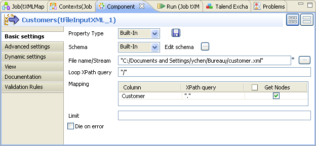A côté du champ Edit schema, cliquez sur le bouton [...] afin d’ouvrir l’éditeur du schéma.
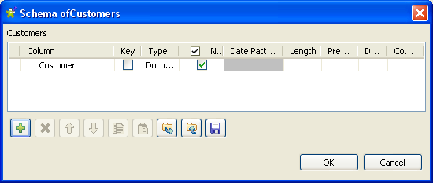Dans l’éditeur du schéma, cliquez sur le bouton [+] pour ajouter une ligne.
Dans la colonne Column, saisissez un nouveau nom pour cette ligne. Dans ce scénario, le nom est Customer.
Dans la colonne Type, sélectionnez le type de données de cette ligne. Dans ce scénario, le type est Document. Le type de données “document” est essentiel pour utiliser au maximum les fonctionnalités du tXMLMap. Pour plus d’informations concernant ce type de données, consultez le Guide utilisateur de Talend Open Studio.
Cliquez sur OK pour valider ce changement et acceptez la propagation proposée par la fenêtre pop-up. Une ligne est ajoutée automatiquement à la table Mapping.
Dans le champ File name / Stream, parcourez votre système jusqu’au fichier XML source fournissant les données client, ou bien saisissez son chemin d’accès.
Dans le champ Loop XPath query, saisissez
“/”pour remplacer le paramètre par défaut. Cela signifie que les données source sont interrogées depuis la racine.Dans la colonne XPath query de la table Mapping, saisissez le XPath. Dans ce scénario, saisissez
“.”, ce qui signifie que toutes les données de la source seront interrogées.Cochez la case Get Nodes dans la colonne de la table Mapping.
Afin de construire le flux de données de type Document, il est nécessaire d'obtenir les nœuds de ce composant.
Pour ce faire, procédez comme suit :
Double-cliquez sur le composant tXMLMap pour ouvrir le Map Editor.
Notez que la zone d’entrée est déjà remplie par les tables d’entrée définies et que la table supérieure est la table principale d’entrée (flux Main).
Dans la table gauche, cliquez-droit sur Customer pour ouvrir le menu contextuel.
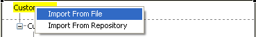Dans ce menu contextuel, sélectionnez Import From File et dans la fenêtre pop-up, parcourez votre système jusqu’au fichier source correspondant, afin d’importer la structure XML utilisée par les données reçues par le tXMLMap. Dans ce scénario, le fichier source est Customer.xml, qui est également connectés au tFileInputXML (Customers).
Vous pouvez également importer une arborescence XML à partir d'un fichier XSD. Lors de l'import d'une structure XML d'entrée ou de sortie depuis un fichier XSD, vous pouvez choisir un élément pour en faire la racine de votre structure XML. Pour plus d'informations concernant l'import d'une arborescence XML à partir d'un fichier XSD, consultez le Guide utilisateur de Talend Open Studio.
Dans la table du côté gauche, cliquez-droit sur le nœud Customer et sélectionnez As loop element pour le définir comme élément de boucle.
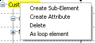Dans la partie inférieure du Map Editor, cliquez sur l’onglet Schema editor afin d’afficher la vue correspondante.
Du côté droit de cette vue, cliquez sur le bouton [+] pour ajouter une ligne à la table Customer et renommez cette ligne Customer_States.
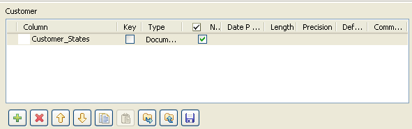Dans la colonne Type de la ligne Customer_States, sélectionnez Document comme type de données. La racine XML correspondante est ajoutée automatiquement à la table supérieure, du côté droit, qui représente le flux de sortie.
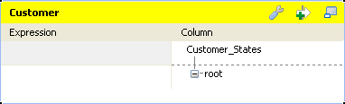Du côté droit de la table supérieure nommée Customer_States, importez la structure XML des données que vous devez utiliser du fichier source XML correspondant. Dans ce scénario, le fichier est Customer_State.xml.
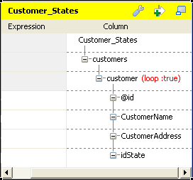Cliquez-droit sur le nœud customer et sélectionnez As loop element dans le menu contextuel.
Vous pouvez ensuite commencer à mapper le flux d’entrée vers le flux de sortie.
Dans la table du côté de l’entrée (gauche) du Map Editor, cliquez sur le nœud id et glissez-le dans la colonne Expression dans la ligne correspondant à la ligne de sortie que vous devez mapper. Dans ce scénario, le nœud est @id.
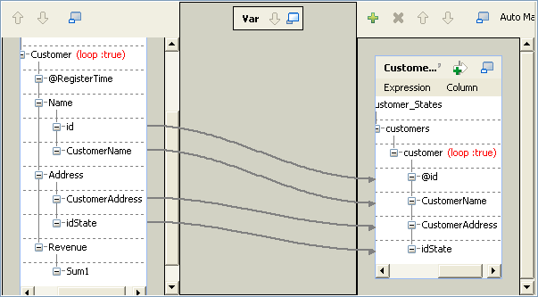Répétez l’opération pour mapper CustomerName à CustomerName, CustomerAddress à CustomerAddress et idState à idState du côté gauche au côté droit.
Dans un projet réel, vous pouvez avoir besoin de laisser des éléments vides dans votre arborescence XML de sortie. Dans ce cas, vous pouvez utiliser le tXMLMap pour les gérer. Pour plus d'informations concernant la gestion des éléments vides via le tXMLMap, consultez le Guide utilisateur de Talend Open Studio.
Si nécessaire pour générer plusieurs flux XML, cliquez sur la clé anglaise en haut à droite afin d'ouvrir le panneau de paramétrage du mapping et configurer la fonctionnalité All in one comme true. Dans cet exemple, cette option est sur true. Pour plus d'informations concernant la fonctionnalité All in one, consultez le Guide utilisateur de Talend Open Studio.
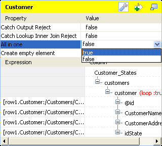Cliquez sur OK pour valider le mapping et fermer le Map Editor.
Si vous fermez le Map Editor sans avoir défini les éléments de boucle nécessaires, comme expliqué plus tôt dans ce scénario, une icône d'erreur 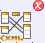 apparaît dans le coin supérieur droit du composant tXMLMap, dans l'espace de modélisation graphique.
Basé sur le scénario précédent, ce scénario explique comment utiliser un flux Lookup (de référence) dans un flux XML afin d’effectuer une jointure sur les données souhaitées dans le flux XML donné. Les données XML de référence sont contenues dans le fichier USstates.xml.
Pour ce faire, un composant tFileInputXML est ajouté au Job précédent afin de charger et d’envoyer des données complémentaires au tXMLMap. Le Job doit ressembler à ceci :
Pour reproduire ce scénario, procédez comme dans les sections suivantes.
Pour ce faire, procédez comme suit :
De la Palette, déposez un composant tFileInputXML dans l’espace de modélisation graphique.
Un composant utilisé dans l’espace de modélisation peut être renommé comme vous le souhaitez. Dans ce scénario, le composant ajouté est nommé USStates. Pour plus d’informations concernant le renommage d’un composant, consultez le Guide utilisateur de Talend Open Studio.
Cliquez-droit sur le composant tFileInputXML nommé USStates pour ouvrir son menu contextuel et sélectionnez Row > Main afin de relier ce composant au tXMLMap. Puisque cette connexion Row est la seconde que vous créez, elle est de type Lookup.
Double-cliquez sur le composant tFileInputXML nommé USStates pour ouvrir sa vue Component.
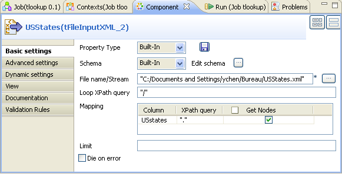A côté du champ Edit schema, cliquez sur le bouton [...] pour ouvrir l’éditeur du schéma.
Dans l’éditeur, cliquez sur le bouton [+] pour ajouter une ligne et renommez-la USState, par exemple.
Dans la colonne Type, sélectionnez Document dans la liste déroulante.
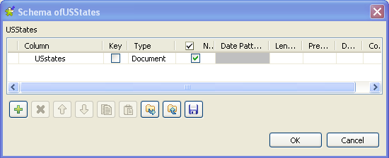Cliquez sur OK pour valider les modifications et accepter la propagation proposée par la boîte de dialogue qui s’ouvre.
Dans le champ File name/Stream, parcourez votre système ou saisissez le chemin d’accès au fichier USStates.xml.
Les schémas d’entrée peuvent être stockés dans le nœud Metadata de la vue Repository pour que vous puissiez les retrouver facilement. Pour plus d’informations concernant la création de métadonnées dans le Repository, consultez le Guide utilisateur de Talend Open Studio.
Dans le champ Loop XPath query, saisissez
"/"afin de remplacer la valeur par défaut. Cela signifie que la boucle est basée sur la racine.Dans la table Mapping, où une ligne est déjà ajoutée automatiquement, saisissez
"."dans la colonne XPath query, afin de récupérer les Etats des Etats-Unis depuis le fichier source.Dans la colonne Get Nodes, cochez la case. Cela va récupérer la structure XML des données de type Document.
Pour ce faire, procédez comme suit :
Double-cliquez sur le composant tXMLMap pour ouvrir le Map Editor.
Notez que la zone d’entrée est déjà remplie par les tables d’entrée définies et que la table supérieure est la table principale d’entrée (flux Main).
Dans la table supérieure, cliquez-droit sur le nœud idState et déposez-le, dans la table inférieure, dans la colonne Exp.key correspondant à la ligne idState. Cela crée une jointure entre les deux tables sur les données idState, parmi lesquelles le nœud idState du flux principal fournit la clé de référence (lookup key).
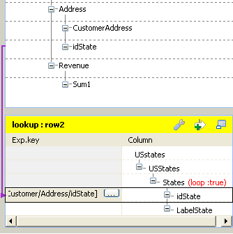Vous pouvez commencer à modifier le mapping du scénario précédent afin d’effectuer une jointure sur les données plates du flux d’entrée. Le mapping doit ressembler à ceci :
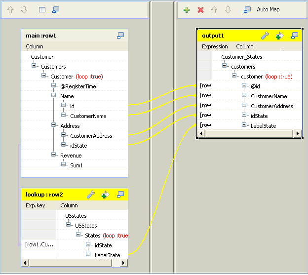Dans la table lookup de gauche dans l’éditeur, cliquez sur la ligne LabelState et déposez-la sur le nœud customer de la sortie. Une boîte de dialogue s’ouvre.
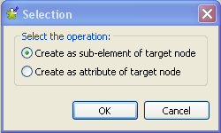Dans cette boîte de dialogue, sélectionnez Create as sub-element of target node puis cliquez sur OK. Cette opération ajoute un sous-élément dans l’arborescence XML de sortie et le mappe également avec LabelState dans l’entrée.
Si nécessaire pour générer plusieurs flux XML, cliquez sur la clé anglaise en haut à droite afin d'ouvrir le panneau de paramétrage du mapping et configurer la fonctionnalité All in one comme true. Dans cet exemple, cette option est sur true. Pour plus d'informations concernant la fonctionnalité All in one, consultez le Guide utilisateur de Talend Open Studio.
Cliquez sur OK pour valider le mapping et fermer le Map Editor.
Appuyez sur F6 pour exécuter le Job.
La vue Run affiche les résultats de l’exécution.
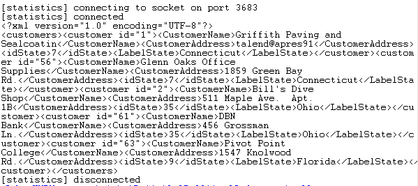Les libellés US State correspondants à l’ID de l’état fourni comme clé de référence par le flux principal sont sélectionnés et écrits en sortie.
Ce scénario se base sur la section intitulée « Scénario 2 : Créer un flux Lookup pour effectuer une jointure sur des données complémentaires XML » et explique comment appliquer une (des) condition(s) de filtre pour sélectionner les données qui vous intéressent, à l’aide du tXMLMap.
Par exemple, vous souhaitez sélectionner les donnée clients pour lesquelles l’ID de l’état est 9.
Pour reproduire ce scénario, procédez comme suit :
Dans votre Studio, ouvrez le Job utilisé dans le scénario précédent afin de l’afficher dans l’espace de modélisation graphique.
Double-cliquez sur le tXMLMap pour ouvrir son éditeur. Dans cet éditeur, les flux d’entrée et de sortie sont déjà mappés puisque le Job est répliqué du scénario précédent.
Du côté de la sortie (à droite), cliquez sur le bouton pour ouvrir la zone de filtre.
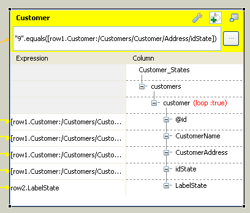Dans cette zone de filtre, déposez le nœud idState du flux d’entrée. Le chemin Xpath de l’idState est ajouté automatiquement dans cette zone de filtre.
Toujours dans cette zone, saisissez votre condition de filtre en Java. Dans ce scénario, la condition est la suivante :
"9".equals([row1.Customer:/Customers/Customer/Address/idState])Si nécessaire pour générer plusieurs flux XML, cliquez sur la clé anglaise en haut à droite afin d'ouvrir le panneau de paramétrage du mapping et configurer la fonctionnalité All in one comme true. Dans cet exemple, cette option est sur true. Pour plus d'informations concernant la fonctionnalité All in one, consultez le Guide utilisateur de Talend Open Studio.
Cliquez sur OK pour valider les modifications et fermer l’éditeur.
Appuyez sur F6 pour exécuter ce Job.
Les résultats d’exécution s’affichent dans la vue Run :
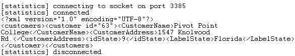Les résultats montrent que le client Pivot Point College est sélectionné, puisque l’ID de son état est 9, ce qui représente la Floride dans ce scénario.
Les données rejetées par le flux Lookup et les conditions de filtre définies dans le tXMLMap peuvent être capturées et écrites en sortie par le composant lui-même.
Ce scénario se base sur la section intitulée « Scénario 3 : Mapper des données à l’aide d’un filtre », et explique comment capturer les données rejetées par le flux Lookup et les filtrer défini dans les sections précédentes.
Dans ce scénario, un autre composant tLogRow est ajouté au Job du scénario précédent. Le Job ressemble à ceci :
Pour reproduire ce scénario, procédez comme suit :
Dans le Studio, ouvrez le Job utilisé dans le scénario précédent dans l’espace de modélisation graphique.
De la Palette, déposez le composant tLogRow dans l’espace de modélisation graphique.
Cliquez sur le tXMLMap pour ouvrir son menu contextuel. Dans ce menu, sélectionnez Row > *New Output* (Main) pour connecter ce composant au nouveau tLogRow. Une boîte de dialogue s’ouvre et vous demande de nommer ce lien de sortie. Dans ce scénario, nommez le lien Reject.
Cliquez sur OK pour valider la création.
Double-cliquez sur le composant tXMLMap pour ouvrir son éditeur. Une table Reject vide a été ajoutée à la sortie pour représenter le flux de sortie contenant les données rejetées. Vous devez compléter cette table afin que l’éditeur ressemble à ceci :
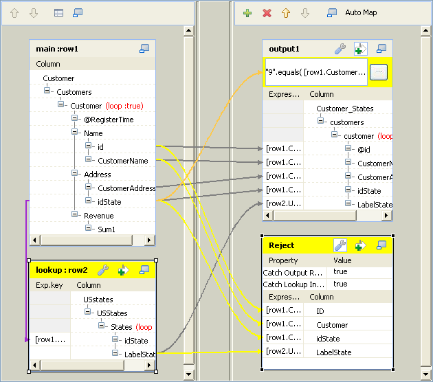Sélectionnez cette table vide Reject.
Dans la partie inférieure de l’éditeur, cliquez sur l’onglet Schema editor pour ouvrir la vue correspondante.
Dans la partie droite de la vue Schema editor, cliquez sur le bouton [+] pour ajouter à la table les lignes que vous souhaitez utiliser. Dans ce scénario, cliquez quatre fois pour ajouter quatre lignes à la table Reject.
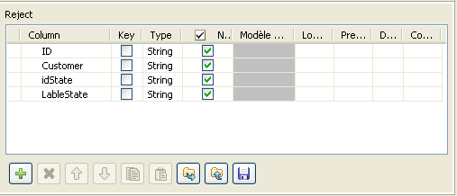Dans la table Reject à droite de la vue Schema editor, renommez les lignes ajoutées. Renommez-les respectivement : ID, Customer, idState, et LabelState.
Dans ce scénario, les données du flux de sortie sont des données plates. Cependant, vous pouvez créer une arborescence XML à l’aide du type de données document. Pour plus d’informations concernant l’utilisation du type document, consultez la section intitulée « Scénario 1 : Mapper et transformer des données de source XML ».
La table Reject est complétée et vous avez défini le schéma du flux de sortie utilisé pour capturer les données rejetées. Vous devez ensuite configurer la (les) condition(s) pour capturer les données rejetées qui vous intéressent.
Dans la partie supérieure de la sortie dans le Map editor, sélectionnez la table Reject.
En haut de cette table, cliquez sur le bouton pour ouvrir la zone de configuration.
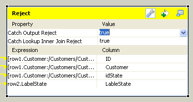Dans la ligne Catch Output Reject de la zone de configuration, sélectionnez true dans la liste déroulante. Ainsi, le tXMLMap écrit les données rejetées par le filtre défini pour le flux de sortie Customer dans le scénario précédent.
Répétez l’opération pour sélectionner true dans la ligne Catch Lookup Inner Join Reject.
Cliquez sur OK pour valider vos modifications et fermer l’éditeur.
Appuyez sur F6 pour exécuter le Job.
Les données capturées rejetées par le flux Lookup et le filtre s’affichent comme suit dans la vue Run :
Les états de ces clients n’ont pas l’ID 9. L’ID de l’état du client BBQ Smith’s Tex Mex est 60. Ce nombre n’existe pas dans la colonne idState du fichier USState.txt pour laquelle le Lookup défini a été effectué. Ainsi, les données de ce client sont rejetées par le flux Lookup et les autres données sont rejetées par le filtre.
Les données sélectionnées par le filtre défini dans le scénario précédent s’affiche comme suit au format XML.
Ce scénario se base sur le Job utilisé dans la section intitulée « Scénario 2 : Créer un flux Lookup pour effectuer une jointure sur des données complémentaires XML » et explique comment définir un élément en tant que group element dans le Map editor du tXMLMap afin de regrouper les données de sortie.
Pour reproduire ce scénario, vous pouvez réutiliser le Job dans la section intitulée « Scénario 2 : Créer un flux Lookup pour effectuer une jointure sur des données complémentaires XML »
Dans ce Job, double-cliquez sur le tXMLMap afin d'ouvrir le Map Editor.
L'objectif de ce scénario est de regrouper les IDs des clients et les informations relatives aux clients, selon l'Etat dans lequel ils résident. Pour ce faire, vous devez ajuster la structure XML, en prenant en compte les facteurs suivants :
Les éléments relatifs à l'ID et au nom des clients doivent être situés sous l'élément de boucle. Ils sont donc des sous-éléments de la boucle.
L'élément de boucle et ses sous-éléments doivent dépendre directement de l'élément de groupe.
L'élément relatif à l'Etat utilisé comme condition de groupe doit dépendre directement de l'élément de groupe.
L'élément de groupe ne peut pas être l'élément racine.
| |
Pour prendre en compte un group element, les données XML à traiter doivent avoir été triées, par exemple via vos outils XML, à l'aide de l'élément que vous souhaitez utiliser comme condition de regroupement. La capture d'écran ci-dessous présente une partie de la source des données triées. Les clients ayant le même idState sont déjà regroupés. 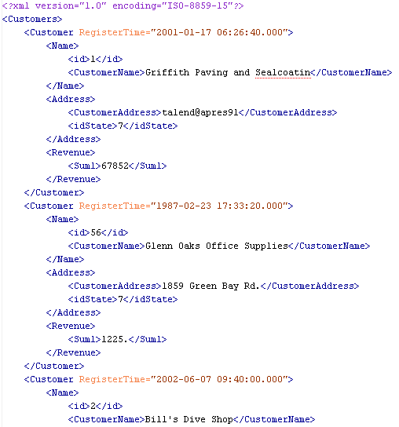 |
A partir de cette analyse, la structure des données de sortie doit se présenter comme suit :
Dans la capture d'écran, le nœud customers est la racine, l'élément Customer est le group element et les données de sortie sont regroupées selon l'élément LabelState.
| |
Pour définir un élément de groupe, deux restrictions doivent être respectées :
Une fois l'élément de groupe défini, le premier élément (en-dehors de celui de boucle) est utilisé comme condition de groupe des données de sortie. |
Pour effectuer l'ajustement selon cette analyse, procédez comme suit :
Dans l’arborescence XML de la sortie, cliquez-droit sur le nœud racine customers pour ouvrir le menu contextuel et sélectionnez Delete. Tous les éléments sous la racine customers sont supprimés. Vous pouvez reconstruire l'arborescence XML afin d'obtenir la meilleure structure pour grouper vos données.
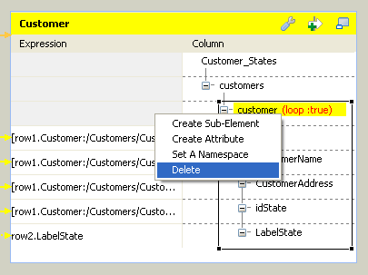Dans l'arborescence XML de la sortie, cliquez-droit sur le nœud racine customers afin d'ouvrir le menu contextuel et sélectionnez Create sub-element. Une boîte de dialogue s'ouvre.
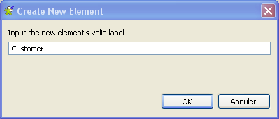Saisissez le nom du sous-élément. Dans ce scénario, le nom est Customer.
Répétez les opérations précédentes afin de créer deux sous-éléments supplémentaires sous le nœud Customer. Nommez-les : LabelState et Name.
Répétez ces opérations encore une fois afin de créer deux sous-éléments sous le nœud Name. Nommez-les : id et CustomerName.
Cliquez-droit sur le nœud Name pour ouvrir le menu contextuel et sélectionnez As loop element pour définir cet élément comme élément de boucle.
Cliquez-droit sur le nœud Customer pour ouvrir son menu contextuel et sélectionnez As group element. Cela signifie que les données de sortie sont regroupées dans l’élément LabelState.
Dans le flux Lookup de données, glissez-déposez la ligne LabelState dans la ligne du nœud LabelState de la colonne Expression dans la table de sortie. Les données correspondantes sont mappées.
Répétez l’opération pour mapper l’élément id et les éléments CustomerName des deux côtés.
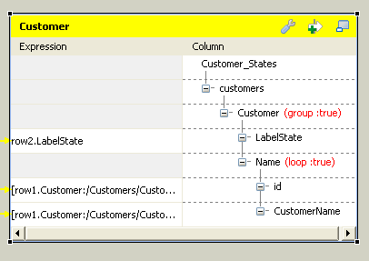Si nécessaire pour générer plusieurs flux XML, cliquez sur la clé anglaise en haut à droite afin d'ouvrir le panneau de paramétrage du mapping et configurer la fonctionnalité All in one comme true. Dans cet exemple, cette option est sur true. Pour plus d'informations concernant la fonctionnalité All in one, consultez le Guide utilisateur de Talend Open Studio.
Cliquez sur OK pour valider les modifications et fermer l’éditeur.
Si vous fermez le Map Editor sans avoir défini les éléments de boucle nécessaires, comme expliqué plus tôt dans ce scénario, une icône d'erreur apparaît dans le coin supérieur droit du composant tXMLMap, dans l'espace de modélisation graphique.
Appuyez sur F6 pour exécuter le Job.
Les résultats d’exécution s’affichent comme suit dans la vue Run.
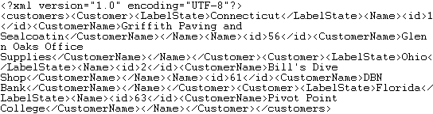
Les éléments id et CustomerName contenus dans la boucle sont regroupés dans l’élément LabelState. La balise du group element Customer marque le début et la fin de chaque groupe.
| |
Le composant tXMLMap propose les éléments "group" et "aggregate" pour classer les données dans une structure XML. Lors de la gestion d'une ligne de données (flux XML complet), la différence de comportement est la suivante :
|
A partir du Job dans la section intitulée « Scénario 5 : Mapper des données à l’aide d’un élément “group” », ce scénario explique comment définir un élément "aggregate element" dans le Map Editor du tXMLMap, afin de classer les données de sortie dans des flux XML séparés.
Dans l'espace de modélisation graphique, double-cliquez sur le composant tXMLMap afin d'ouvrir son Map editor. La sortie s'affiche comme suit :
L'objectif de ce scénario est d'agréger les informations client selon les Etats de résidence, à l'aide de l'élément aggregate, puis d'envoyer ces données séparément dans différents flux XML vers le composant suivant.
| |
Pour prendre en compte un élément aggregate, les données XML à traiter doivent avoir été triées, par exemple via vos outils XML, à l'aide de l'élément que vous souhaitez utiliser comme condition d'agrégation. La capture ci-dessous affiche une partie des données source triées. Les clients ayant le même idState sont regroupés. |
Pour ce faire, ajustez l'arborescence XML comme suit :
Cliquez-droit sur l'élément Customer afin d'ouvrir son menu contextuel et sélectionnez Remove group element.
Cliquez sur la clé anglaise en haut à droite afin d'ouvrir le panneau de paramétrage du mapping et configurer la fonctionnalité All in one comme false.
Cliquez-droit sur l'élément LabelState afin d'ouvrir son menu contextuel puis sélectionnez As aggregate element. Cet élément ajoute des balises relatives aux informations d'Etat de chaque client et les informations clients sont classées sous les informations d'Etats (State).
Afin de rendre l'élément "aggregate" disponible, vérifiez que la fonctionnalité All in one est configurée sur false. Pour plus d'informations concernant cette fonctionnalité, consultez le Guide utilisateur de Talend Open Studio.
Cliquez sur OK afin de valider ces modifications et fermer le Map editor.
Appuyez sur F6 pour exécuter ce Job.
La vue Run s'ouvre automatiquement, dans laquelle vous pouvez vérifier les résultats d'exécution.
Le tXMLMap écrit trois flux XML séparés, chacun d'entre eux contenant les informations d'un Etat et des clients vivant dans cet Etat.
| |
Le composant tXMLMap propose les éléments "group" et "aggregate" pour classer les données dans une structure XML. Lors de la gestion d'une ligne de données (flux XML complet), la différence de comportement est la suivante :
|